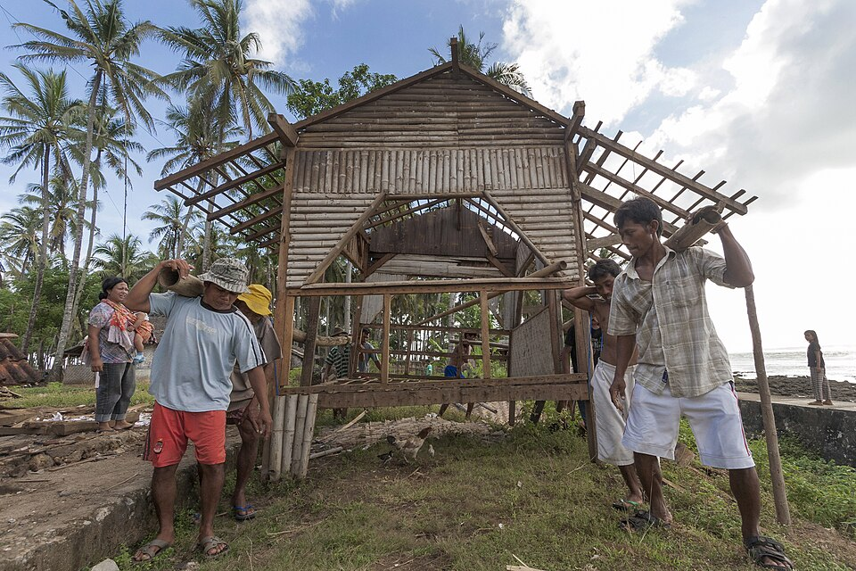

Tentang Desa Wanasari
Wanasari berarti hutan yang subur. Nama ini berasal dari para pembuka lahan yang menetap di kaki bukit sekitar tahun 1880-an dan mengubah hutan menjadi sawah dan kebun kopi.
Kini sebagian besar warga bekerja sebagai petani, perajin bambu, dan pedagang kecil. Desa ini berjarak 18 kilometer dari pusat Kabupaten Sukamaju.


- Penduduk
- 4.218 jiwa
- Kepala keluarga
- 1.276 KK
- Luas wilayah
- 682 ha
- Wilayah
- 5 dusun
Visi
Desa yang mandiri dari hasil buminya sendiri, dengan layanan yang mudah untuk semua warga.
Misi
- Mempercepat layanan surat dan membuka informasi anggaran
- Memperbaiki jalan usaha tani dan saluran irigasi
- Mengembangkan BUMDes dan produk warga
- Menjaga kesehatan ibu, anak, dan lansia
Dusun dan kepala dusun
- Dusun KrajanSlamet Riyadi
- Dusun SidorejoWahyu Prasetyo
- Dusun KarangtengahAgus Setiawan
- Dusun TegalsariDedi Kurniawan
- Dusun SumberanYanto Hermawan
Perangkat desa
- Kepala DesaBambang Suharto
- Sekretaris DesaRina Puspitasari
- Kaur KeuanganDewi Lestari
- Kaur PerencanaanHendra Saputra
- Kasi PelayananSiti Aminah
- Kasi KesejahteraanJoko Santoso
Perjalanan desa
- Sekitar 1880
Pembukaan lahan
Beberapa keluarga menetap di kaki bukit dan membuka hutan menjadi sawah. Dari sinilah nama Wanasari berasal.
- 1926
Kebun kopi pertama
Kopi robusta mulai ditanam di lereng timur dan menjadi penghasilan utama setelah padi.
- 1968
Menjadi desa resmi
Lima dusun disatukan menjadi Desa Wanasari, dengan kantor desa di Krajan.
- 2004
Listrik sampai Sumberan
Semua dusun akhirnya mendapat aliran listrik, disusul jalan aspal dua tahun kemudian.
- 2019
BUMDes berdiri
BUMDes Wanasari Makmur mulai mengelola kios, air bersih, dan bank sampah.
- 2025
Rumah sangrai kopi
Musyawarah desa memutuskan membangun rumah sangrai agar petani bisa menjual kopi sendiri.
Wilayah dan batas desa
Desa berada di kaki bukit, 18 kilometer dari pusat Kabupaten Sukamaju.
| Sisi | Berbatasan dengan | Penanda |
|---|---|---|
| Utara | Desa Mekarjati | Sungai Cisari |
| Timur | Hutan lindung Gunung Sari | Kebun kopi di lereng |
| Selatan | Desa Sukadadi | Jalan kabupaten |
| Barat | Desa Pasirhalang | Hamparan sawah |
- Sawah
- 284 ha
- Kebun
- 221 ha
- Permukiman
- 96 ha
- Hutan dan lainnya
- 81 ha
Lembaga desa
Pemerintah desa bekerja bersama lembaga berikut.
BPD
Sembilan anggota yang membahas peraturan desa dan mengawasi anggaran. Ketua: Pak Mulyono.
PKK
Menggerakkan posyandu, kebun gizi, dan pelatihan ibu. Ketua: Bu Wiwik Suharto.
Karang Taruna
Mengelola perpustakaan keliling, olahraga, dan relawan bencana. Ketua: Fajar Nugroho.
LPMD
Membantu perencanaan dan pengerjaan pembangunan. Ketua: Pak Sarono.
Kelompok Tani
Tujuh kelompok padi dan kopi yang mengatur air serta pupuk. Ketua gabungan: Pak Darto.
BUMDes
Mengelola kios, air bersih, bank sampah, dan rumah sangrai. Direktur: Hendra Wijaya.
Fasilitas umum
- Polindes WanasariBidan Ratna, setiap hari kerjaKrajan
- PosyanduMelati, Mawar, Anggrek, Kenanga, Dahlia5 pos
- SekolahDua TK, dua SD, dan satu SMP5 sekolah
- Masjid dan musalaTersebar di semua dusun14 tempat
- Balai pertemuanSatu balai desa dan empat balai dusun5 balai
- Air bersihDikelola BUMDes, melayani 840 rumah3 sumber